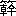

趙の
邯鄲の都に住む
紀昌という男が、天下第一の弓の名人になろうと志を立てた。
己の師と
頼むべき人物を物色するに、当今弓矢をとっては、名手・
飛衛に
及ぶ者があろうとは思われぬ。百歩を
隔てて
柳葉を射るに百発百中するという達人だそうである。紀昌は
遥々飛衛をたずねてその門に入った。
飛衛は新入の門人に、まず
瞬きせざることを学べと命じた。紀昌は家に帰り、妻の
機織台の下に
潜り
込んで、そこに
仰向けにひっくり返った。
眼とすれすれに
機躡が忙しく上下往来するのを
じっと瞬かずに
見詰めていようという
工夫である。理由を知らない妻は大いに
驚いた。第一、
妙な姿勢を妙な角度から
良人に
覗かれては困るという。
厭がる妻を紀昌は
叱りつけて、無理に機を織り続けさせた。来る日も来る日も
彼はこの
可笑しな
恰好で、瞬きせざる修練を重ねる。二年の
後には、
遽だしく往返する
牽挺が
睫毛を
掠めても、絶えて瞬くことがなくなった。彼はようやく機の下から
匍出す。もはや、
鋭利な
錐の先をもって
瞼を
突かれても、まばたきをせぬまでになっていた。不意に
火の
粉が目に飛入ろうとも、目の前に
突然灰神楽が立とうとも、彼は決して目をパチつかせない。彼の瞼はもはやそれを閉じるべき筋肉の使用法を忘れ果て、夜、
熟睡している時でも、紀昌の目はカッと大きく見開かれたままである。ついに、彼の目の睫毛と睫毛との間に小さな一
匹の
蜘蛛が
巣をかけるに及んで、彼はようやく自信を得て、師の飛衛にこれを告げた。
それを聞いて飛衛がいう。瞬かざるのみではまだ
射を授けるに足りぬ。次には、
視ることを学べ。視ることに熟して、さて、小を視ること大のごとく、
微を見ること
著のごとくなったならば、
来って我に告げるがよいと。
紀昌は再び家に
戻り、
肌着の
縫目から
虱を一匹探し出して、これを
己が
髪の毛をもって
繋いだ。そうして、それを南向きの窓に
懸け、終日
睨み
暮らすことにした。毎日毎日彼は窓にぶら下った虱を見詰める。初め、もちろんそれは一匹の虱に過ぎない。二三日たっても、
依然として虱である。ところが、十日余り過ぎると、気のせいか、どうやらそれが
ほんの少しながら大きく見えて来たように思われる。
三月目の終りには、明らかに
蚕ほどの大きさに見えて来た。虱を
吊るした窓の外の風物は、次第に移り変る。
煕々として照っていた春の
陽はいつか
烈しい夏の光に変り、
澄んだ秋空を高く
雁が
渡って行ったかと思うと、はや、寒々とした灰色の空から
霙が落ちかかる。紀昌は根気よく、
毛髪の先にぶら下った
有吻類・
催痒性の小節足動物を見続けた。その虱も何十匹となく
取換えられて行く
中に、早くも三年の月日が流れた。ある日ふと気が付くと、窓の虱が馬のような大きさに見えていた。
占めたと、紀昌は
膝を打ち、表へ出る。彼は我が目を疑った。人は
高塔であった。馬は山であった。
豚は
丘のごとく、

は
城楼と見える。
雀躍して家にとって返した紀昌は、再び窓際の虱に立向い、
燕角の
弧に
朔蓬の
をつがえてこれを射れば、矢は見事に虱の心の臓を
貫いて、しかも虱を繋いだ毛さえ
断れぬ。
紀昌は
早速師の
許に
赴いてこれを報ずる。飛衛は
高蹈して胸を打ち、初めて「出かしたぞ」と
褒めた。そうして、直ちに射術の
奥儀秘伝を
剰すところなく紀昌に授け始めた。
目の基礎訓練に五年もかけた
甲斐があって紀昌の
腕前の上達は、驚くほど速い。
奥儀伝授が始まってから十日の後、試みに紀昌が百歩を隔てて柳葉を射るに、
既に百発百中である。二十日の後、いっぱいに水を
湛えた
盃を右
肱の上に
載せて
剛弓を引くに、
狙いに
狂いの無いのはもとより、杯中の水も微動だにしない。
一月の後、百本の矢をもって速射を試みたところ、第一矢が
的に
中れば、続いて飛来った第二矢は誤たず第一矢の
括に中って突き
刺さり、
更に間髪を入れず第三矢の
鏃が第二矢の括にガッシと
喰い込む。
矢矢相属し、
発発相及んで、後矢の鏃は必ず前矢の括に喰入るが故に、絶えて地に
墜ちることがない。瞬く中に、百本の矢は一本のごとくに相連なり、的から一直線に続いたその最後の括はなお
弦を
銜むがごとくに見える。傍で見ていた師の飛衛も思わず「善し！」と言った。
二月の後、たまたま家に帰って妻と
いさかいをした紀昌がこれを
威そうとて
烏号の弓に
 衛
衛の矢をつがえ
きりりと
引絞って妻の目を射た。矢は妻の睫毛三本を射切ってかなたへ飛び去ったが、射られた本人は一向に気づかず、まばたきもしないで
亭主を
罵り続けた。けだし、彼の至芸による矢の速度と狙いの精妙さとは、実にこの域にまで達していたのである。
もはや師から学び取るべき何ものも無くなった紀昌は、ある日、ふと良からぬ考えを起した。
彼がその時独りつくづくと考えるには、今や弓をもって己に敵すべき者は、師の飛衛をおいて
外に無い。天下第一の名人となるためには、どうあっても飛衛を除かねばならぬと。
秘かにその機会を
窺っている中に、一日たまたま
郊野において、向うからただ一人歩み来る飛衛に
出遇った。とっさに意を決した紀昌が矢を取って狙いをつければ、その気配を察して飛衛もまた弓を
執って相応ずる。二人
互いに射れば、矢はその度に中道にして相当り、共に地に墜ちた。地に落ちた矢が
軽塵をも
揚げなかったのは、両人の技がいずれも
神に入っていたからであろう。さて、飛衛の矢が
尽きた時、紀昌の方はなお一矢を余していた。得たりと勢込んで紀昌がその矢を放てば、飛衛はとっさに、傍なる
野茨の
枝を折り取り、その
棘の
先端をもってハッシと鏃を
叩き落した。ついに非望の
遂げられないことを
悟った紀昌の心に、成功したならば決して生じなかったに
違いない道義的
慚愧の念が、この時
忽焉として
湧起った。飛衛の方では、また、危機を
脱し得た
安堵と己が
伎倆についての満足とが、敵に対する
憎しみをすっかり忘れさせた。二人は互いに
駈寄ると、野原の
真中に
相抱いて、しばし美しい師弟愛の
涙にかきくれた。（こうした事を今日の道義観をもって見るのは当らない。美食家の
斉の
桓公が己のいまだ味わったことのない
珍味を求めた時、
厨宰の
易牙は己が
息子を
蒸焼にしてこれをすすめた。十六
歳の少年、
秦の始皇帝は父が死んだその晩に、父の
愛妾を三度
襲うた。すべてそのような時代の話である。）
涙にくれて
相擁しながらも、再び
弟子がかかる
企みを抱くようなことがあっては
甚だ危いと思った飛衛は、紀昌に新たな目標を
与えてその気を転ずるにしくはないと考えた。彼はこの危険な弟子に向って言った。もはや、伝うべきほどのことはことごとく伝えた。

がもしこれ以上この道の
蘊奥を極めたいと望むならば、ゆいて西の
方大行の
嶮に
攀じ、
霍山の頂を極めよ。そこには
甘蠅老師とて
古今を
曠しゅうする
斯道の大家がおられるはず。老師の技に比べれば、我々の射のごときはほとんど
児戯に類する。
の師と頼むべきは、今は甘蠅師の外にあるまいと。
紀昌はすぐに西に向って旅立つ。その人の前に出ては我々の技のごとき児戯にひとしいと言った師の言葉が、彼の自尊心にこたえた。もしそれが本当だとすれば、天下第一を目指す彼の望も、まだまだ
前途程遠い訳である。己が
業が児戯に類するかどうか、とにもかくにも早くその人に会って腕を比べたいとあせりつつ、彼はひたすらに道を急ぐ。足裏を破り
脛を傷つけ、
危巌を攀じ
桟道を渡って、一月の後に彼はようやく目指す
山顛に
辿りつく。
気負い立つ紀昌を
迎えたのは、羊のような
柔和な目をした、しかし
酷くよぼよぼの
爺さんである。年齢は百歳をも
超えていよう。
腰の曲っているせいもあって、
白髯は歩く時も地に
曳きずっている。
相手が
聾かも知れぬと、大声に遽だしく紀昌は来意を告げる。己が技の程を見てもらいたいむねを述べると、あせり立った彼は相手の返辞をも待たず、いきなり背に負うた
楊幹麻筋の弓を外して手に
執った。そうして、
石碣の矢をつがえると、折から空の高くを飛び過ぎて行く渡り鳥の群に向って狙いを定める。弦に応じて、
一箭たちまち五
羽の大鳥が
鮮やかに
碧空を切って落ちて来た。
一通り出来るようじゃな、と老人が
穏かな微笑を
含んで言う。だが、それは
所詮射之射というもの、好漢いまだ
不射之射を知らぬと見える。
ムッとした紀昌を導いて、
老隠者は、そこから二百歩ばかり
離れた
絶壁の上まで連れて来る。
脚下は文字通りの
屏風のごとき
壁立千仭、遥か真下に糸のような細さに見える
渓流をちょっと覗いただけでたちまち
眩暈を感ずるほどの高さである。その
断崖から
半ば宙に乗出した危石の上につかつかと老人は駈上り、
振返って紀昌に言う。どうじゃ。この石の上で先刻の業を今一度見せてくれぬか。今更
引込もならぬ。老人と入代りに紀昌がその石を
履んだ時、石は
微かにグラリと
揺らいだ。
強いて気を
励まして矢をつがえようとすると、ちょうど
崖の
端から小石が一つ転がり落ちた。その
行方を目で追うた時、覚えず紀昌は石上に
伏した。
脚はワナワナと
顫え、
汗は流れて
踵にまで至った。老人が笑いながら手を差し
伸べて彼を石から下し、自ら代ってこれに乗ると、では射というものをお目にかけようかな、と言った。まだ
動悸がおさまらず
蒼ざめた顔をしてはいたが、紀昌はすぐに気が付いて言った。しかし、弓はどうなさる？ 弓は？ 老人は
素手だったのである。弓？ と老人は笑う。弓矢の
要る中はまだ射之射じゃ。不射之射には、
烏漆の弓も
粛慎の矢もいらぬ。
ちょうど彼
等の真上、空の極めて高い所を一羽の
鳶が
悠々と輪を
画いていた。その
胡麻粒ほどに小さく見える姿をしばらく見上げていた甘蠅が、やがて、見えざる矢を無形の弓につがえ、満月のごとくに引絞って
ひょうと放てば、見よ、鳶は羽ばたきもせず中空から石のごとくに落ちて来るではないか。
紀昌は
慄然とした。今にして始めて芸道の
深淵を覗き得た心地であった。
九年の間、紀昌はこの老名人の許に
留まった。その間いかなる修業を積んだものやらそれは
誰にも
判らぬ。
九年たって山を降りて来た時、人々は紀昌の顔付の変ったのに驚いた。以前の負けず
嫌いな
精悍な
面魂はどこかに
影をひそめ、なんの表情も無い、
木偶のごとく
愚者のごとき
容貌に変っている。久しぶりに旧師の飛衛を訪ねた時、しかし、飛衛はこの顔付を一見すると
感嘆して
叫んだ。これでこそ初めて天下の名人だ。
我儕のごとき、
足下にも及ぶものでないと。
邯鄲の都は、天下一の名人となって戻って来た紀昌を
迎えて、やがて眼前に示されるに違いないその妙技への期待に湧返った。
ところが紀昌は一向にその要望に
応えようとしない。いや、弓さえ絶えて手に取ろうとしない。山に入る時に
携えて行った楊幹麻筋の弓もどこかへ
棄てて来た様子である。その
わけを
訊ねた一人に答えて、紀昌は
懶げに言った。
至為は
為す無く、至言は言を去り、至射は射ることなしと。なるほどと、
至極物分りのいい邯鄲の都人士はすぐに
合点した。弓を執らざる弓の名人は彼等の
誇となった。紀昌が弓に
触れなければ触れないほど、彼の無敵の評判はいよいよ
喧伝された。
様々な
噂が人々の口から口へと伝わる。毎夜
三更を過ぎる
頃、紀昌の家の
屋上で何者の立てるとも知れぬ弓弦の音がする。名人の内に宿る射道の神が主人公の
睡っている間に体内を
脱け出し、
妖魔を
払うべく
徹宵守護に当っているのだという。彼の家の近くに住む一商人はある夜紀昌の家の上空で、雲に乗った紀昌が
珍しくも弓を手にして、
古の名人・

と養由基の二人を相手に腕比べをしているのを確かに見たと言い出した。その時三名人の放った矢はそれぞれ夜空に青白い
光芒を曳きつつ
参宿と
天狼星との間に消去ったと。紀昌の家に
忍び入ろうとしたところ、
塀に足を
掛けた
途端に一道の殺気が
森閑とした家の中から
奔り出て
まともに
額を打ったので、覚えず外に
顛落したと白状した
盗賊もある。
爾来、
邪心を抱く者共は彼の住居の十町四方は
避けて
廻り道をし、
賢い渡り鳥共は彼の家の上空を通らなくなった。
雲と
立罩める名声のただ中に、名人紀昌は次第に老いて行く。既に早く射を離れた彼の心は、ますます
枯淡虚静の域にはいって行ったようである。木偶のごとき顔は更に表情を失い、語ることも
稀となり、ついには呼吸の有無さえ疑われるに至った。「既に、我と彼との別、是と非との分を知らぬ。眼は耳のごとく、耳は鼻のごとく、鼻は口のごとく思われる。」というのが、老名人晩年の
述懐である。
甘蠅師の許を辞してから四十年の後、紀昌は静かに、誠に
煙のごとく静かに世を去った。その四十年の間、彼は絶えて射を口にすることが無かった。口にさえしなかった位だから、弓矢を執っての活動などあろうはずが無い。もちろん、
寓話作者としてはここで老名人に
掉尾の
大活躍をさせて、名人の真に名人たるゆえんを明らかにしたいのは山々ながら、一方、また、何としても古書に記された事実を曲げる訳には行かぬ。実際、老後の彼についてはただ無為にして化したとばかりで、次のような妙な話の外には何一つ伝わっていないのだから。
その話というのは、彼の死ぬ一二年前のことらしい。ある日老いたる紀昌が知人の許に招かれて行ったところ、その家で一つの器具を見た。確かに
見憶えのある道具だが、どうしてもその名前が思出せぬし、その
用途も思い当らない。老人はその家の主人に
尋ねた。それは何と呼ぶ品物で、また何に用いるのかと。主人は、客が
冗談を言っているとのみ思って、ニヤリと
とぼけた笑い方をした。老紀昌は
真剣になって再び尋ねる。それでも相手は
曖昧な笑を
浮べて、客の心をはかりかねた様子である。三度紀昌が
真面目な顔をして同じ問を
繰返した時、始めて主人の顔に
驚愕の色が現れた。彼は客の眼を
凝乎と見詰める。相手が冗談を言っているのでもなく、気が狂っているのでもなく、また自分が聞き違えをしているのでもないことを確かめると、彼はほとんど
恐怖に近い
狼狽を示して、
吃りながら叫んだ。
「ああ、
夫子が、――
古今無双の射の名人たる夫子が、弓を忘れ果てられたとや？ ああ、弓という名も、その使い
途も！」
その後当分の間、邯鄲の都では、画家は絵筆を
隠し、楽人は
瑟の
絃を断ち、
工匠は
規矩を手にするのを
恥じたということである。
（昭和十七年十二月）